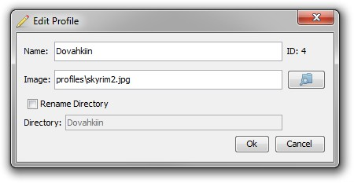

This window allows you to edit all aspects of a profile. It can be opened by clicking on the edit profile button in the profile menu after selecting a profile.
Name, this is the name of the profile.
Image, this is the location of the image file to be used for the profile's image. Click on the folder icon () to display a window where you can pick the image.
Directory, this is the name of the folder where the profile's saved games are located. Generally this is no need to change this. To be able to edit this you must first click the "Rename Directory" check box.
ID, this is the internal id number used to identify each profile. This is only used when interacting with the Profile Manager through command line arguments.